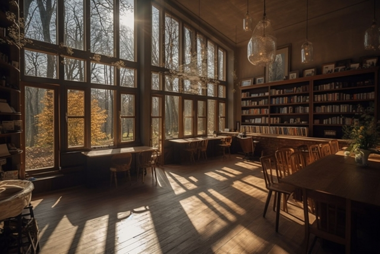
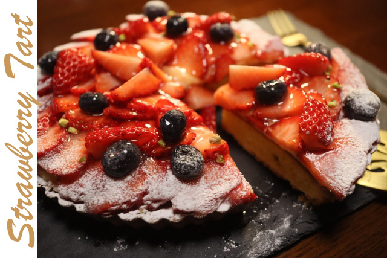

MODANN CAFÉ
長野県塩尻市に店を構える「MODANN CAFÉ（モダンカフェ）」。
地域の方に人気の、コーヒーとスイーツが美味しいカフェとして、
多くの方にご愛顧いただいております。
厳選豆を自家焙煎し、挽きたて淹れたてでご用意する自慢のコーヒー。
世界各国の品種を定期的に入れ替えてご用意しており、どれも豆本来の特徴を素直に感じられる味わいが人気です。
ゆったりと店内で過ごしたい時やお食事利用なら、「MODANN CAFÉ」にお立ち寄りください。

MENU

Price
1 PIECE ¥800
1 WHOLE ¥2400
タルトやミルフィーユ、厳選されたスペシャルティコーヒーをご提供しています。
ランチタイムにはお食事用のメニューもございますのでぜひ。
コーヒーを片手にほっと一息つきたい時はもちろん、観光で塩尻へお越しの方は旅の休憩所として気軽にご利用ください。